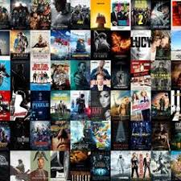
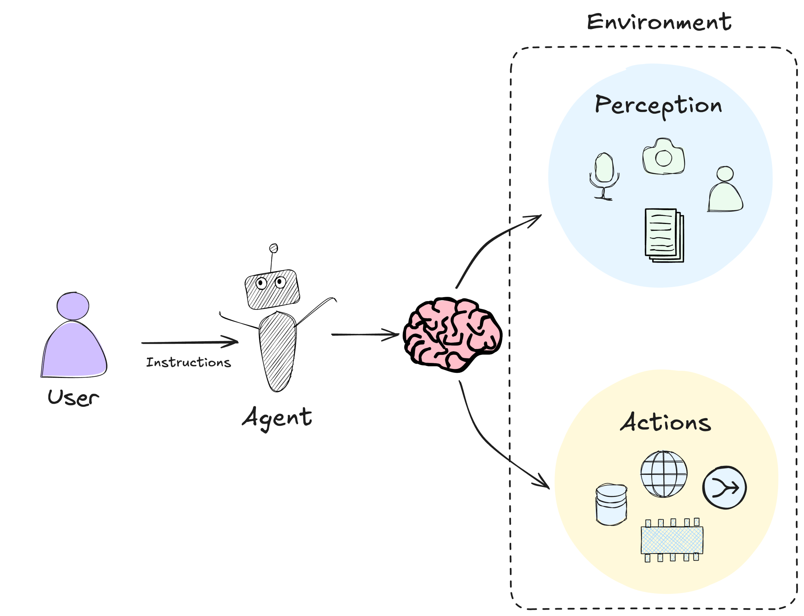

Technical projects
A selection of research and applied builds across computer vision, multimodal learning, and distributed AI systems.
Deepfake Detection using β-Variational Autoencoder
Hybrid detection framework combining unsupervised latent-space representation learning with supervised classification. Trained on FFHQ real faces and Stable Diffusion–generated synthetic faces, using KL-divergence anomaly detection and a logistic regression classifier on 128-D latent embeddings.

Multimodal Movie Genre Classification
Dual-branch fusion model combining DistilBERT text embeddings with ResNet-18 visual features to predict multi-label movie genres from posters and plot overviews, deployed with a live interactive demo.

AI Agent Microservice Platform
Containerized runtime orchestrating 50+ concurrent autonomous AI agents via a FastAPI orchestrator and Redis message queue, with health checks, retry logic, and structured logging.
Partial Face Recognition Under Occlusion
Hybrid feature-engineering pipeline (HOG, SIFT, LBP) with PCA dimensionality reduction and SVM classification, designed to identify individuals from incomplete or occluded facial features.

Role-Based E-Commerce Management System
Java desktop application with role-based access control across Admin, Warehouse, Delivery, and Fraud Analyst dashboards, backed by a normalized MySQL schema.